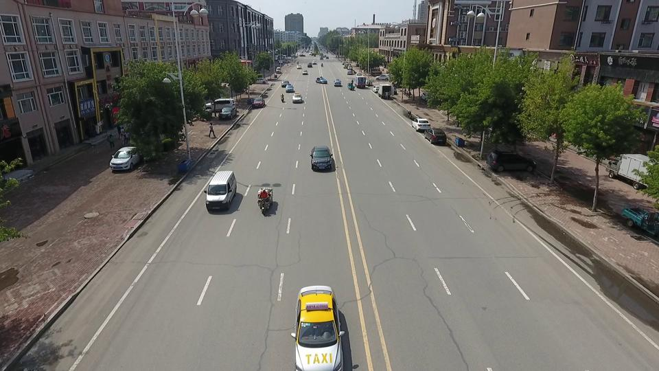
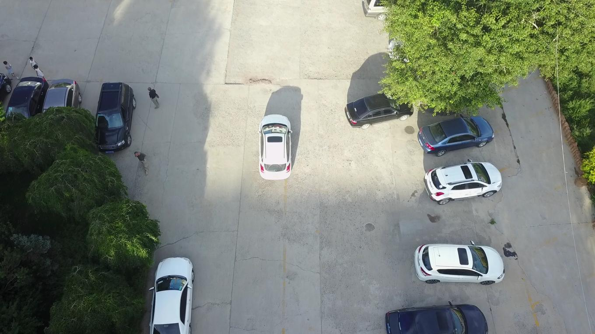
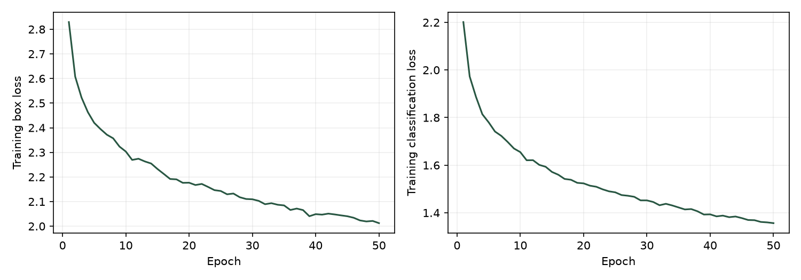
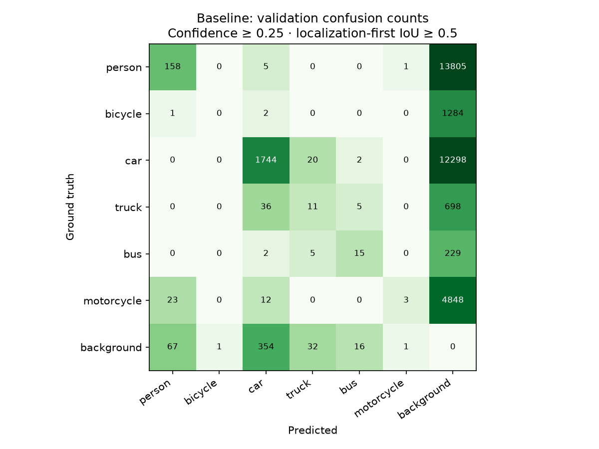
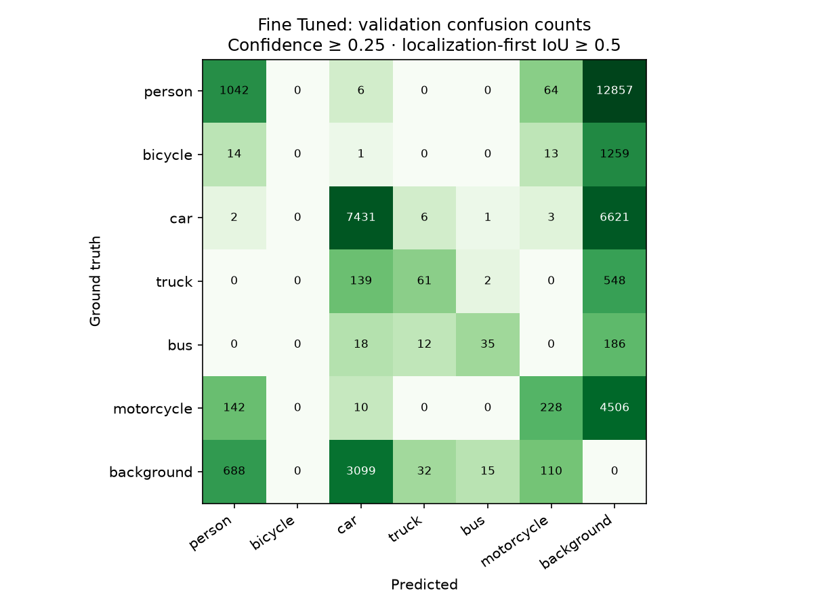

Dataset preparation
Converted VisDrone annotations for training and COCO-style scoring: 6,471 training images, 548 validation images, and 1,610 final test images.
Fine-tuning YOLO11n on VisDrone and measuring the improvement over a COCO-pretrained baseline.
2.21% → 15.09%Shared-class mAP@0.5 on 1,610 held-out images.

Both frozen models evaluated once on the same 1,610 test-dev images. Six shared categories, identical inference settings, and explicit COCO-style scoring.
| Metric | Baseline | Fine-tuned | Δ pp |
|---|---|---|---|
| mAP @ 0.5 | 2.21% | 15.09% | +12.88 |
| AP | 1.29% | 7.57% | +6.28 |
| Small-object AP | 0.21% | 1.76% | +1.54 |
| Medium-object AP | 2.06% | 11.50% | +9.43 |
| Large-object AP | 10.54% | 24.56% | +14.02 |
AP is mAP@0.5:0.95. Object sizes use original-resolution COCO area ranges. pp = percentage points.
| Category | Baseline AP | Fine-tuned AP |
|---|---|---|
| Person | 1.35% | 2.22% |
| Bicycle | 0.00% | 0.05% |
| Car | 3.75% | 21.47% |
| Truck | 1.34% | 5.27% |
| Bus | 1.02% | 14.66% |
| Motorcycle | 0.29% | 1.78% |
All six shared categories improved in AP. Cars and buses show the largest gains, while bicycles and small objects remain difficult. Better than the baseline does not mean reliable enough for deployment.
This separate task includes van, tricycle, and awning-tricycle. Its scores are not directly comparable to the six-class baseline table.
| Category | AP@0.5:0.95 | AP@0.5 |
|---|---|---|
| Pedestrian | 2.22% | 6.25% |
| People | 0.55% | 1.61% |
| Bicycle | 0.05% | 0.26% |
| Car | 20.11% | 39.66% |
| Van | 3.06% | 4.63% |
| Truck | 5.12% | 9.15% |
| Tricycle | 1.41% | 3.22% |
| Awning-Tricycle | 0.87% | 1.46% |
| Bus | 14.45% | 25.54% |
| Motor | 1.72% | 5.24% |
mAP@0.5:0.95 4.96%
mAP@0.5 9.70%
Small-object AP 1.09%
Medium-object AP 7.54%
Large-object AP 18.12%
Project COCO-style metrics, not official VisDrone leaderboard scores. AP summarizes performance across confidence thresholds; it is not the percentage of objects correctly detected. One seed; no statistical-significance claim. Validation results use a different image set and are not mixed into this final comparison.
The same images, shown three ways. Start with the original frames, then explore selected gains and failures.
Six shared classes · confidence ≥ 0.25 for both models · matching IoU ≥ 0.5

Three original site frames, fixed before inspecting model predictions; then three largest increases in matched objects, three largest decreases, and three largest remaining miss counts. Each additional frame comes from a different sequence prefix; ties use image ID. These selected examples are not representative averages.
Counts use category-aware COCO matching with the same crowd ignore policy as evaluation. The 0.25 confidence cutoff is a fixed display choice, not an optimized operating point. Published AP uses predictions down to 0.001 and remains unchanged. Dashed gray boxes include ignored and excluded-class regions.
Training losses over 50 epochs. Confusion charts use localization-first matching (IoU ≥ 0.5), then compare classes; their matching differs from the category-aware counts above. Counts are raw; background represents misses or false alarms.



An end-to-end pipeline for dataset conversion, recoverable training, and comparable evaluation.
Converted VisDrone annotations for training and COCO-style scoring: 6,471 training images, 548 validation images, and 1,610 final test images.
Person, bicycle, car, truck, bus, motorcycle. Both models map into the same six-class label space. Full ten-class results are reported separately.
pycocotools scoring at 320px, confidence 0.001, NMS IoU 0.7, and detection caps of 3,000. Category-aware crowd annotations handle ignored regions.
Seeded training, recorded configurations, environment locks, and Drive checkpoints. Optimizer recovery verified. 25 automated tests passed. Source and checkpoint hashes preserved.
COCO and VisDrone have different taxonomies. Pedestrian and people are merged into person after native class-aware NMS; no second NMS is applied. Van, tricycle, and awning-tricycle are non-scored regions in the shared comparison. Ignored areas are represented as crowd boxes in every evaluated category, a project approximation of VisDrone’s ignore rules. One training seed does not establish statistical significance.
Download evaluation settings ↓Next experiments: higher input resolution or tiled inference for small objects, validation-only threshold calibration, and more training seeds. These are proposed experiments, not measured improvements. Real-time inference and deployment remain unevaluated.